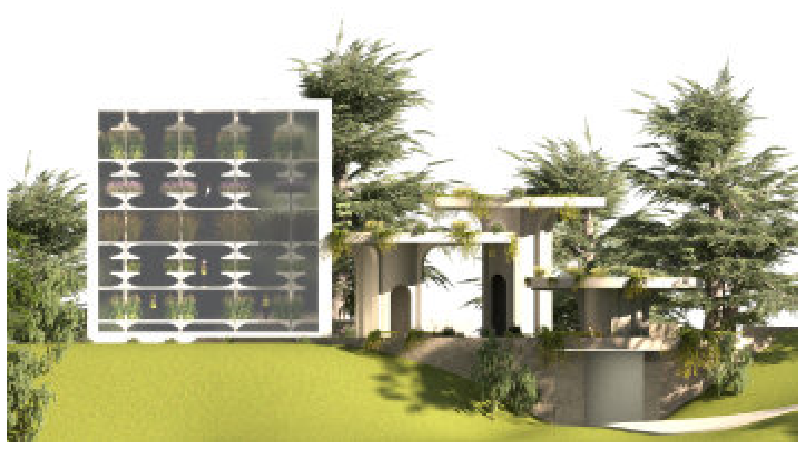
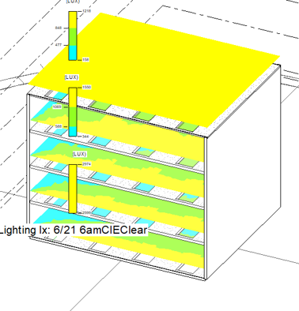
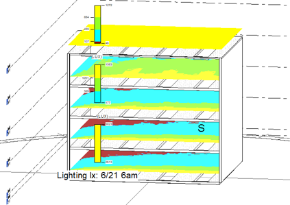
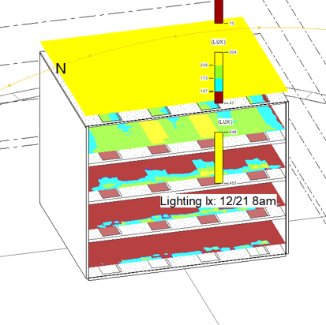
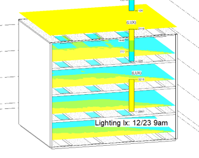

Vertical Farm

This project proposed a conversion of a visitor parking lot on the Georgia Tech campus into a vertically oriented urban farm. The building serves as a food distribution center for the community, while creating a walkable, accessible space for education, recreation, and social interaction. The design maximizes crop yield within a dense urban campus, and integrates energy-efficient strategies, such as solar orientation, passive heating/cooling, and material selection to optimize both building performance and agricultural output. Ultimately, the project serves as a model for sustainable urban development, showing how existing campus infrastructure can be reimagined to tackle food access, climate resilience, and land scarcity.
Rendering

Lighting Analysis



